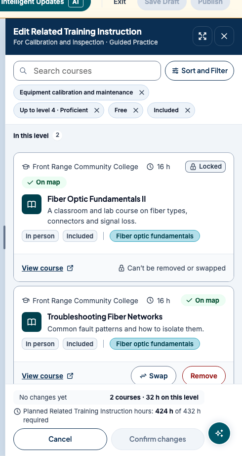

I'm interested in the space between people and technology.
Andy Tran · Boulder, CO · CU Boulder, B.S. Creative Technology & Design + Music Technology, expected May 2028 · o.andy.tran@gmail.com
Product designer who also ships the front end. At CareerWise USA I'm the primary designer on an apprenticeship-management product: tasks and notifications, training-plan editing, and the design system from Figma into code. Outside work I run the visual identity of Asian Unity at CU Boulder and DJ as ONDY.
Now Looking for Summer 2027 creative technologist, design engineer and product design internships. I work across product design, code, image, sound and emerging technology to make experiences people actually want to interact with.
Work
An apprenticeship-management product at CareerWise USA, 2025 to now
A multi-role product: supervisors, apprentices, schools and employers all use it. Every piece below is a state system, a hierarchy decision and a feedback rule. Every screenshot is a prototype with fictional demo data, cropped to the component.
One page for one job, from landing on it to pressing Apply. Its states resolve in priority order, so the applicant's own status always outranks the job's: "you have an offer" beats "this job closed". Built for a 16-year-old reading on a phone in a short window, sometimes as an English-language learner.
Role: Associate Salesforce Developer & AI Specialist, primary designer on the product. I owned the plan, the research and the prototype; my supervisor set requirements and reviewed each iteration; engineering ports the result into the product.
All 16 states rendered from one posting, numbered in priority order. Each is one banner plus one main button; the first true row wins.
Problem
The existing posting page buried the two-step application note inside the job description, put every fact in a long sidebar, and had no answer for what happens after you apply, or when a job closes, pauses, or changes while your application is pending. The kickoff added new states and loosened "required" fields, so engineering and design were working from different lists.
What I did
Wrote the design plan: six principles (readable in 30 seconds, no surprises at Apply, plain words, show what's there, one clear next step, built for phones, screen readers and printers), a field-by-field display rule table, and a state table where the first true row wins.
Spent half a day on the job sites students already use, one column per layout question: how they show missing pay, what an expired link shows, where the Apply button sits while you scroll.
Built the page as a self-contained HTML prototype on the product's design tokens, with five test postings and every page state switchable from a control bar.
Ran seven independent reviews of the first iteration, one lens each (the teen reader, structure, visual hierarchy, accessibility, product states, copy, implementation), and merged them into one change list. The reviews and the prototype scaffolding were AI-assisted; the plan, the state model and every design call are mine.
Kept the copy free of system nouns: "in person" not "on-site", "vaccines" not "immunizations", "Lasts 3 years" not "commitment". Empty sections disappear, but pay says "Pay not listed", because its absence matters.
Made print a real deliverable: counselors print postings, so every list is open and links print their URLs.
Result
Iteration two: pay is the largest thing on the page, every fact is stated once, sections render only when they add something, and "How to apply" collapsed to one line that expands. The state model grew from 13 to 16, and when there is nothing to do the sticky bar, checklist and spots count all go away. The longest test posting went from about seven phone screens to about four. It went to my supervisor for review in mid-October 2026. It is a prototype, not yet in production, so there are no usage numbers yet.
Tools
Figma · React + TypeScript prototype on the product's design tokens · Claude Code
Phone and desktop views
Iteration two on a phone. Pay leads the Quick facts; How to apply is one line until you open it.Desktop keeps the same order and moves the action into a sticky card on the right.
The dashboard rail, the detail panel and the full queue share one task anatomy: status, lateness, the reason the task exists, and a single primary action. I owned how tasks look and behave across the product, and the notification panel that goes with them.
The full queue with a docked detail panel. The same card anatomy appears in the dashboard rail.
Full case study
Role: Associate Salesforce Developer & AI Specialist, primary designer on the product. I owned the UX and interaction design: cards, chips, filtering, organization logic, full-page views and interaction states. Engineering owns the production build.
Problem
Tasks are generated by the system, not typed by people, and the first release has five kinds. The same task has to read the same way in the dashboard, in the side panel and on the full page, and a supervisor with a dozen apprentices has to see what is overdue before anything else.
What I did
Defined one task anatomy used everywhere: status chip, due date with lateness, title, the apprentice it is about, a "why this task" line, and one primary action that matches the task type.
Designed the dashboard widget as three to five curated tasks with overdue pinned first, and the full page as a queue with search, "due soonest" sort, filters, and grouping into Overdue, Coming up, Snoozed and Done.
Opened each task in a side panel with two actions, and stacked status chips in a fixed order (Snooze, Overdue, In progress) so the same situation always looks the same.
Designed notifications as a bell-triggered overlay panel rather than an inbox, with four categories: action required, progress and milestones, AI output ready, product and platform.
Kept status out of color alone: every chip has a word, overdue adds a date, and "why this task" is a sentence rather than an icon. Progress bars were deferred to a later version.
Rebuilt the approved prototype on the product's real component CSS and markup so engineering could lift it directly.
Result
The team approved the tasks prototype and it became the reference for the app chrome and card style on later pages, including the job posting page. As of October 2026 the task card and notification panel are in design review (chip hierarchy, action buttons, the four categories). Not yet in production, so not yet measured.
Tools
Figma · HTML prototypes on the product's component CSS
Replacing a required course inside an apprentice's training plan. Locked courses stay visible with their reason, the hour total against the requirement updates as you choose, and nothing changes until Confirm.
Swapping a course. The list is already filtered to the same competency and level; the hours footer stays pinned.
Full case study
Role: Associate Salesforce Developer & AI Specialist, primary designer on the product. I designed course editing and replacement end to end: course cards, hierarchy, filtering, recommended replacements, the replacement logic and the full swap flow.
Problem
Every apprenticeship carries required classroom hours. When a course is cancelled, full, or wrong for the apprentice, a supervisor has to replace it without dropping below the hour requirement, without touching courses the program has locked, and without the apprentice seeing a half-finished plan. They also need to see what else would satisfy the same competency without searching a catalog.
What I did
Put course editing inside the training plan's edit mode, as a side panel scoped to one level, so the swap always has context.
Designed the course card: provider, hours, format, whether it is included or free, the competencies it covers, and a lock state with its reason ("Can't be removed or swapped"). Locked courses stay visible rather than disappearing.
Designed the swap as a replace, not a delete-and-add: pick the course to replace, then choose from "Courses you can use instead", already filtered to the same competency and level, with a recommended option first.
Kept the hours math on screen the whole time. Nothing changes until "Confirm changes", nothing reaches the apprentice until the plan is published, and Cancel swap returns to the list with no side effects.
Result
The flow lives in the interactive wireframe of the training plan (version 5) with the rest of its edit mode. It is at the wireframe stage, not yet in production, so not yet measured.
Tools
Figma · interactive HTML wireframe on the product's design tokens

Before the swap: the level's courses, with the locked one still shown and its reason in words.
Case study 04 · ongoing · implemented in the dev environment
Two-layer tokens, Figma components with code counterparts, and prototypes that run on the product's real CSS instead of a lookalike. The same approach is what a UI library in Unity or Unreal needs: one source of truth that designers and engineers both build from.
The supervisor dashboard prototype after alignment: the same design, now running on the product's tokens and component CSS.
Full case study, with a token excerpt
Role: Associate Salesforce Developer & AI Specialist. I implement the design system from Figma into front-end code and keep the two consistent; icons are linked between Figma and Storybook with Code Connect.
Problem
Prototypes drift. A mockup built with a hand-picked blue looks right in review and then has to be rebuilt on the real components, where it looks different. Designers and engineers end up arguing about which version is the design.
What I did
Worked on a two-layer token system (primitives to semantics) that exports to Figma and to CSS custom properties. Components reference semantic tokens only; primitives are private, so a theme change touches one layer.
Wrote guideline floors engineers actually use: color pairings with measured contrast, 14px minimum for functional text, 16px minimum for inputs so iOS doesn't zoom, focus rings as outlines so they survive high-contrast mode.
Rebuilt approved prototypes on the product's real component CSS and markup, with a check that fails on any raw hex or undefined variable, so "matches the product" is verified rather than claimed.
Token excerpt
/* Tier 1: primitives. Private; only the semantic tier references them. */
--p-color-neutral-0: #FFFFFF;
--p-color-neutral-500: #64748B;
--p-color-navy-800: #0A2E52;
/* Tier 2: semantic. The only tier components use. */
--bg-surface: var(--p-color-neutral-0);
--bg-inverse-neutral: var(--p-color-neutral-900);
/* A component never sees a hex. */
.panel-header {
background: var(--bg-surface);
border-bottom: var(--border-width-1) solid var(--border-default);
}
Abridged from the generated token block in one of the prototypes above.
Result
The first token version is implemented in the dev environment and Storybook. The tasks prototype runs on the product's CSS and matched the real components' markup state for state. No further measurement yet.
I run the visual side of Asian Unity: logo, graphics, social, photo, video and motion. This year's theme is Y2K Tokyo pop with old-tech motifs. The yearly teaser flips through CRT static like someone changing channels, lands on an "incoming transmission from University of Colorado Asian Unity" message, then a music drop and the logo reveal. Photoshop, Premiere and Ableton, from idea to a release to a real audience. The same system carries the merch: "CH 48 · AUB-TV · 48 nations, one signal."
In one 30-day period in 2026 the account reached 140K Instagram views, 2.5K interactions and 200 new followers. Teaser video on request.
Shirt back for the channel theme.
3D narrative animation · spring 2026 · Blender, Figma, Premiere
A Five Nights at Freddy's-inspired piece for an image class: a dark storage room, camcorder and surveillance points of view, keyframed animatronic performance, UV-mapped TV screens, pixel art made in Figma, then compositing, audio sync, effects and sound design in Premiere. Video on request.
I DJ as ONDY: 30+ sets across clubs, bars, house parties and pop-ups, including support slots for Slickportal. I also work as an independent DJ and event-audio contractor for weddings (15+ so far): the couple consultation, ceremony and reception sound, mics, lighting, MCing, and coordinating planners, venues, photographers and vendors on the day.
It is the most direct UX work I do. You watch behavior, read the feedback, and change the experience while it is happening. As president of CU Rave Club I lead a 300-member music community and have run six or more pop-ups and collaborations with venues and local artists.
Cover art I made for DUBWUB 6, where I played a headline set.
A conversational system that evaluates apprentice progress against a scoring rubric through structured questions, with voice input and output so people can talk to it instead of typing. I designed the chat experience and the structure of the interaction: how it opens with what needs attention, how it asks, and how it hands back a plan a supervisor can act on.
A private app for running this internship search from my phone. React and TypeScript on Vite, Postgres with row-level security, one serverless function, and a scheduled Claude Code routine that discovers postings, scores them on skill, interest and trajectory fit, writes a brief, and tailors a resume from a JSON base. No router, no drag library, no CSS framework: the design system is one tokens file, and this page uses the same one.
The part I care about is the card. Four rounds of review (a simulated user, a design critique, a recruiter and data pass, an accessibility pass) produced rules like: one question per screen, text before numbers, never show a judgment without its evidence, never dress a guess as a measurement, and honest empty states. A posting nobody has read says so instead of rendering blanks. It is private because it holds my applications.
// total = Σ weight · score − penalties (each score is 0–10)
export function normalizeWeights(w) {
const sum = Object.values(w).reduce((a, b) => a + b, 0) || 1;
return Object.fromEntries(Object.entries(w).map(([k, v]) => [k, v / sum]));
}
/** Skill fit: how well the role and its requirements match what you already do. */
export function scoreSkill(job, rubric) {
// ...
if (req.length) {
const matched = req.filter(has);
const reqScore = (10 * matched.length) / req.length;
base = cfg.roleWeight * role.skill + cfg.requirementWeight * reqScore;
} else {
// Nothing read from the posting yet: baseline only, and the card shows no sub-scores.
base = role.skill;
}
const penalty = Math.min(cfg.gapPenaltyMax, gaps.length * cfg.gapPenalty);
return { score: round1(clamp(base + bonus - penalty)), parts };
}
The scoring engine, abridged. Pure functions, so the same file runs in the browser and in the nightly routine; every score carries the parts that produced it.